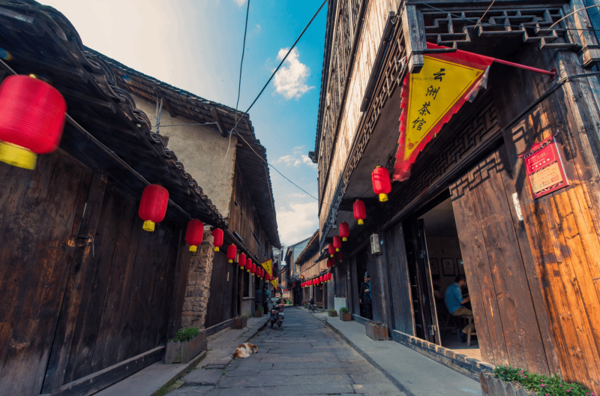

工作档案座谈、对接与地方协作用于记录文化特派员工作如何从交流、对接和需求梳理展开。
认识一座村庄，不能只看概念，也要看人、路、水、房子、工具、手和声音。这个页面把马鸣村可持续积累的照片、视频、访谈、物件和声音整理成档案结构，作为“图像看马鸣”的材料基础。
马鸣村的水网、老街、桑蚕丝织记忆、蚕丝被手艺和光影故事，如果只停留在一次性报道里，很容易被简化为“古村风景”或“地方特产”。影像档案的意义，是把这些内容按对象、时间、地点和使用权限整理起来，让读者、研究者、展陈设计者和文旅讲解者都能找到可靠材料。
老街店铺、河道岸线、展馆空间、作坊场景和节庆活动都会变化。持续拍摄能保存马鸣村不同阶段的面貌。
文字能说明信息，影像能呈现人的表情、手的动作、空间尺度和现场声音，两者结合才能更完整。
有编号、有来源、有授权状态的影像，比临时找图更适合进入展览、导览、课程和公共传播。
马鸣村影像档案可以先从空间、民俗和手工三类画面建立基础，再逐步补充人物访谈和声音记录。


以下目录依据已经可见的图片和报道线索建立，也为日后实地拍摄、编号整理和授权记录预留位置。
| 编号 | 图像主题 | 内容说明 | 可继续补充 |
|---|---|---|---|
| IMG-01 | 马鸣村全景 | 村落整体、水网和聚落肌理，用于说明马鸣村作为传统水乡村落的整体空间。 | 拍摄时间、航拍位置、授权信息。 |
| IMG-02 | 马鸣老街 | 石板路、茶馆、店铺和老街日常，用于展示马鸣村的生活气息。 | 店铺名称、人物访谈、街巷路线。 |
| IMG-03 | 河道与小桥 | 水、桥、岸和民居的关系，用于分析水网如何塑造村落体验。 | 河道名称、桥名、村民记忆。 |
| IMG-04 | 高杆船技 | 身体技艺与水上表演，用于分析非遗身体性和节庆观看。 | 表演者访谈、节庆时间、动作分解。 |
| IMG-05 | 水上戏台 | 蚕花水会中的水上戏台和观演关系，用于理解水乡民俗空间。 | 活动流程、观看人群、声音记录。 |
| IMG-06 | 手工蚕丝被工艺 | 剥茧、拉丝、铺被和缝制等工序，用于补充产业与手工记忆。 | 作坊名称、手艺人访谈、工序视频。 |
影像档案不只是把图片放进文件夹。每张图最好同时保留“拍摄对象、拍摄地点、人物关系、文化含义和使用权限”，这样日后才能被准确阅读和再次使用。
例如马鸣老街照片，应记录街段位置、拍摄方向、店铺类型、人物活动和时间段。这样读者才能知道它表现的是老街建筑、清晨生活，还是游客观看关系。
蚕丝被工艺照片不能只拍“成品很白很软”，还要记录剥茧、拉丝、铺被、翻折、缝制等动作，以及手艺人如何判断丝绵状态。
人物影像应标注被摄者身份、访谈主题、是否同意公开展示、是否可用于论文或展览。没有授权的人像，不应随意用于公开传播。
蚕花水会、高杆船技、水上戏台等场景，需要记录活动时间、组织者、观看人群、声音、船只位置和仪式顺序，避免只把民俗拍成热闹场面。
不同的人会讲出不同的马鸣村：老蚕农讲记忆，手艺人讲工艺，企业主讲产品，游客讲体验，文化特派员讲传播。
正式访谈需要现场录音、整理文字和取得授权。下面不是虚构访谈原文，而是进入马鸣村时可以优先整理的“摘录类型”，用于提示影像档案应如何从声音转化为可阅读材料。
| 摘录类型 | 适合访问的人 | 可记录的问题 | 可转化的内容 |
|---|---|---|---|
| 老街记忆 | 老茶客、店主、周边村民 | 老街过去有哪些店铺？清晨茶馆为什么热闹？哪些生活习惯还保留着？ | 老街导览词、声音档案、短视频人物口述。 |
| 桑蚕丝织经验 | 老蚕农、家庭养蚕经历者 | 家里过去怎样养蚕？哪些季节最忙？蚕具、桑叶和家庭分工如何安排？ | 桑蚕丝织记忆展板、口述史文章、研学课程材料。 |
| 手工蚕丝被 | 手艺人、作坊经营者、女工 | 拉丝和铺被有哪些难点？如何判断一床被子的质量？年轻人是否还愿意学？ | 工艺纪录短片、产品故事、品牌传播素材。 |
| 光影故事 | 展馆维护者、老放映员、村民 | 电影机、放映和乡村公共生活有什么关系？村民如何记得过去的看电影经验？ | 光影故事馆导览、影像展陈、村庄记忆专题。 |
| 节庆民俗 | 传承人、组织者、观看者 | 蚕花水会和高杆船技如何组织？谁参与？人们为什么观看和传承？ | 民俗影像脚本、非遗图像分析、节庆路线说明。 |
这些档案类型帮助读者理解：马鸣村的文化不是抽象概念，而是由人、空间、物件和日常动作组成。
记录村民、手艺人、企业主和游客的叙述，听见不同人眼中的马鸣村。
记录桑园、水网、庭院、作坊、展厅、民宿和直播间等空间节点。
记录蚕匾、丝线、被胎、老照片、包装、宣传册和品牌物料。
为了后续持续补充，影像档案可以采用统一编号，避免图片、视频、访谈和物件资料混在一起。
如 IMG-2026-MM-001，记录空间、人物、工艺、物件和节庆照片。
如 VID-2026-CRAFT-001，记录工艺过程、访谈片段、路线行走和节庆活动。
如 INT-2026-OLDSTREET-001，记录访谈对象、主题、录音、文字稿和授权状态。
以下不是正式田野访谈原文，而是根据报道内容整理出的访问方向。进入马鸣村实地走访时，可以围绕这些线索补充真实访谈、录音和授权。
浙江新闻报道提到，马鸣老街茶馆清晨很早开门，吸引茶客聚集。这个线索适合继续访问老街店主、老茶客和周边村民，了解老街日常生活如何延续。
浙江传媒学院报道提到马鸣村手工蚕丝被制作加工技艺。访谈可围绕“谁在做、怎么学、哪些工序最难、年轻人是否愿意学”等问题展开。
早期报道提到马鸣村电影机展示馆，学校报道提到光影故事馆。访谈可面向展馆维护者、老放映员或村民，了解电影、放映和村落记忆之间的关系。
蚕花水会和高杆船技可作为节庆访谈线索。访问传承人、观看者和组织者，可以记录民俗活动如何连接桑蚕丝织信仰和水乡空间。